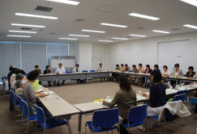

| 【日 時】 6月11日（水）13：30～15：30 |
 |
| 【場 所】 浦和コミュニティーセンター第14集会室 |
| 【参加者】 15団体33人 |
| ■ |
学習会 |
「消費者行政一元化の動きと消費者団体の役割」
埼玉消費者被害をなくす会副理事長 池本 誠司 弁護士 |
|
＜概要＞
ミートホープ、パロマ社（湯沸かし器）、悪質商法・クレジット被害などのように、内部告発や通報で問題があがっても取り上げようとしない等、縦割りの消費者行政には弊害がある。関係省庁に対するより強い勧告権限や消費生活に重大な影響を与える身近な分野の法律の所管ができるなど、消費者行政を統一的・一元的に推進する新組織（消費者庁）が必要。その土台として、地方の消費者行政を充実させ、司令塔（消費者庁）と現場の声がつながる必要がある。
地方消費者行政の実態として、消費生活センターに寄せられる苦情相談は13年前の3倍以上に激増。あっせん処理の割合は減少し解決困難な事案が増加の傾向。予算は13年前のほぼ半分で人員も大幅に減少している。拡充策として、消費生活相談窓口の拡充、相談員、職員の配置基準の法制化や消費者への周知、利用促進のための工夫等が必要。
今後の取り組みとして、「消費者行政推進埼玉地方本部」の設置を県に要請すると共に、国や地方行政を総合的に拡充・強化することを、さらに多くの消費者団体や地域住民へ呼びかける。また「消費者行政充実埼玉会議」（21団体参加）の参加団体の拡大を目指していく。
■各団体の活動交流
| ＜さいたま市消団連＞ |
| さいたま市消費生活展（11/1）に参画します。 |
| ＜所沢市消団連＞ |
| 水の安全の学習やごみ問題に取り組んでいきます。 |
| ＜狭山市消団連＞ |
| 市をあげてレジ袋の削減に取り組んでいます。 |
| ＜蓮田市消団連＞ |
| 環境フェアに参加。農業祭、食と農を考えるつどいに参加します。 |
| ＜桶川市くらしの会＞ |
| 市の広報に「くらしのワンポイント」を掲載。日常の疑問を学習。 |
| ＜加須市くらしの会＞ |
| 消費生活セミナーや講演会に会員以外の参加者も増えています。 |
| ＜栗橋町くらしの会＞ |
| 町の消費者生活相談員による講演会、バザーで手作り廃油石鹸の販売、ゴミ削減・マイバッグ持参運動など出来ることを行っています。 |
| ＜久喜市くらしの会＞ |
| 手作り無公害せっけんを小・中学校への配布、環境の大切さを伝えています。 |
| ＜白岡町くらしの会＞ |
| 消費生活セミナー等を開催。視察研修に富岡製糸場を予定。 |
| ＜めぬまくらしの会＞ |
| マイバッグ持参・レジ袋削減に力を入れています。 |
| ＜新日本婦人の会埼玉県本部＞ |
| 待ったなしの地球温暖化問題に、真剣に取り組んでいます。 |
| ＜埼玉母親大会連絡会＞ |
| 埼玉母親大会（6/29）を越谷市立富士中学校で開催します。 |
| ＜埼玉県生協ネットワーク協議会＞ |
| さいたまコープ、ドゥコープ、勤労者生協、高齢者生協、住宅生協、医療生協の6生協で学習会等を行い交流しています。 |
| ＜NPO法人埼玉消費者被害をなくす会＞＜埼玉消団連＞ |
| 活動の紹介を行いました。 |
各団体からの活動報告後、行政からの補助金や、事業収入、研修費の自己負担、会員の参加状況などの質問が出され、意見交換をしました。
|